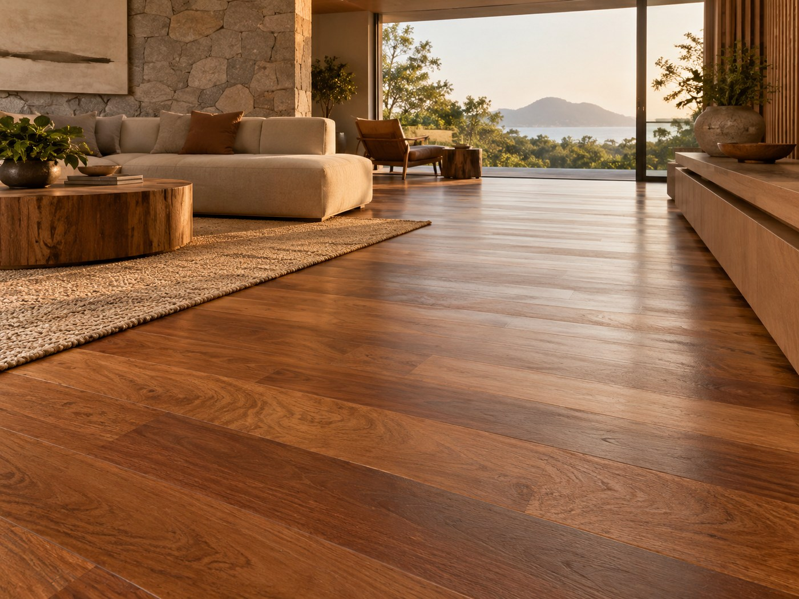

Alta resistência e tonalidade quente para ambientes de uso intenso e alto padrão.
Curadoria ARQSELECT. Imagem ilustrativa gerada por IA.

Solicite seu orçamento pelo WhatsApp ARQSELECT: (19) 98165-5013.